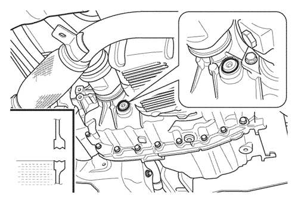
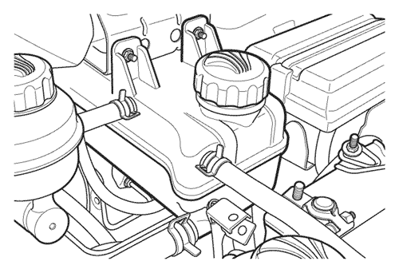
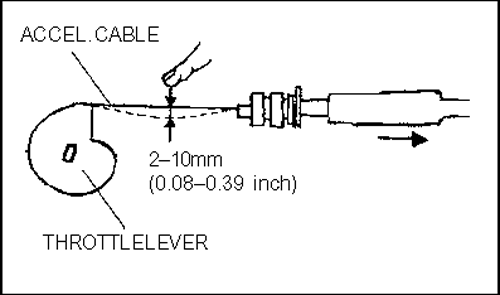

РАЗДЕЛ 2
МОТОРНЫЙ ОТСЕК
1. НЕПЛОТНОЕ СОЕДИНЕНИЕ КОМПОНЕНТОВ
Проверить, нет ли в моторном отсеке неплотно соединённых компонентов, лопнувших или пережатых вакуумных шлангов, неисправных штекеров, разъёмов и прочих отсутствующих или разъединённых компонентов среди перечисленного ниже.



- Воздушный фильтр
- Крышка масляного фильтра
- Бачок тормозной жидкости*
- Бачок жидкости для сцепления*
- Бачок для охлаждающей жидкости
- блок предохранителей и реле
- аккумулятор
- Бачок для жидкости стеклоомывателя
- Бачок жидкости для усилителя рулевого управления
- Щуп для проверки уровня масла в двигателе
*Kalos/Aveo, Nubira/Lacetti и Evanda имеют один бачок тормозной жидкости для сцепления.
- Проверка наличия и соединения всех компонентов двигателя.
- Проверка соединений штекеров и разъёмов.
- Проверка вакуумных шлангов на наличие сгибов, пережимов, повреждений, скрученности и деформации.
- Проверка зажимов шланга и соединений трубок на предмет утечки или неплотности в следующих системах:
- - Топливная система
- - Система охлаждения
- - Система рулевого управления с гидроусилителем
- - Система кондиционирования
- Проверка плотности соединений компонентов двигателя.
При обнаружении неисправности затянуть зажимы, соединения, болты, гайки и заменить или исправить дефектный шланг и соединения шланга.
2. ПРОКЛАДКА ШЛАНГОВ И ЭЛЕКТРОПРОВОДКИ
Проверка правильности прокладки следующих шлангов и электропроводки, обеспечивающей их достаточную удалённость от движущихся или горячих деталей.
- Топливный шланг
- Шланг кондиционера
- Вакуумные шланги
- Кабель высокого напряжения для системы зажигания
- Электропроводка
3. ЛЕГКОСТЬ ПЕРЕМЕЩЕНИЯ РЫЧАЖНЫХ МЕХАНИЗМОВ, КЛАПАНОВ И ДРУГИХ КОМПОНЕНТОВ
Проверка перемещения или лёгкости перемещения рычажных механизмов, клапанов и других компонентов.
- Трос акселератора
- Проверить свободный ход троса акселератора при горячем двигателе, как описано ниже.
- 1) Потянуть трос акселератора в сторону рычага дроссельной заслонки.
- 2) Потянуть трос от рычага дроссельной заслонки, пока рычаг не начнёт двигаться (свободный ход).
- При необходимости регулировки руководствоваться инструкциями "9. Привод дроссельной заслонки" настоящего раздела.
- Педаль сцепления
- Проверка свободного хода педали сцепления при нажатии на педаль.
- Система рулевого привода
- Для проверки состояния системы рулевого привода рекомендуется участие двух механиков и установка автомобиля на ровной поверхности.
- Один из механиков поворачивает рулевое колесо в одну сторону, затем - в другую и проверяет его работу, крепление и состояние, а также крепление рулевой колонки (с усилителем или без него), в то время как другой механик проверяет свободный ход в следующих местах:
- - Поперечные рулевые тяги (люфт недопустим)
- - Крепление рулевого механизма на траверсе
- - Универсальный шарнир вала рулевого управления с движением от рулевого механизма вверх (люфт недопустим)
- - Проверить крепление и плотность всех зажимов
- 1) Убедиться в надёжности подключения пускового выключателя и контактов.
- 2) Запустить стартер и проверить следующее:
- стартер должен поддерживать работу двигателя в стандартном режиме.
- Стартер должен работать без посторонних шумов.
Примечание: Не следует допускать длительной работы стартера - это грозит чрезмерной нагрузкой на аккумулятор.
- Пуск двигателя
- Запустить двигатель и проверить исправность его работы.
- Если двигатель на пускается или глохнет после пуска, необходимо проверить описанное ниже. Более подробную информацию см. в руководстве по техническому обслуживанию.
- - Система зажигания
- - Исправность управления воздухом в режиме холостого хода
- - Датчики и блок управления двигателя (при необходимости)
4. ПОСТОРОННИЕ ШУМЫ
Проверка посторонних шумов в моторном отсеке.
Запустить двигатель и проверить его на наличие посторонних шумов. При наличии посторонних шумов следует затянуть или закрепить детали и отрегулировать расстояние между компонентами.
5. НЕГЕРМЕТИЧНОСТЬ ШЛАНГОВ, СОЕДИНЕНИЙ ТРУБОК И Т.П.
Визуально проверить шланги, соединения трубок, уплотнения, прокладки и пробки на негерметичность и наличие утечки. При необходимости затянуть зажимы и соединения.
- Топливная система
- Система кондиционирования
- Система охлаждения
- Тормозная система
- Система сцепления
- Система рулевого управления с гидроусилителем
- Двигатель
- - Корпус опоры распредвала
- - Головка блока цилиндров
- - Блок цилиндров
- - Масляный поддон
- - Уплотнения для распредвала и т.п.
6. СИСТЕМА РУЛЕВОГО УПРАВЛЕНИЯ С ГИДРОУСИЛИТЕЛЕМ
Проверить герметичность механизма рулевого управления с гидроусилителем, его трубок и шлангов, а также их удалённость от подвижных и нагревающихся деталей.
Как следует затянуть зажимы и соединения.
7. ЗАЩИТА ОХЛАЖДАЮЩЕЙ ЖИДКОСТИ ДВИГАТЕЛЯ
Проверка защиты охлаждающей жидкости двигателя
- Охлаждающие вентиляторы приводятся в действие блоком управления двигателя с помощью реле низкоскоростного и высокоскоростного охлаждающего вентилятора для моделей без кондиционера или с помощью последовательного/ параллельного реле охлаждающего вентилятора для моделей с кондиционером, как указано ниже.
<Пример: TACUMA(REZZO)>
|
Описание
|
Режим работы охлаждающего вентилятора
|
Рабочая температура вентилятора (°С)
|
|
Вкл
|
Выкл.
|
|
Кондиционер выкл. или модель без кондиционера
|
Низкая скорость
|
96
|
93
|
|
Высокая скорость
|
100
|
97
|
|
Кондиционер вкл.
|
Низкая скорость
|
при включенной системе кондиционирования
|
|
Высокая скорость
|
100
|
97
|
- Проверить все шланги и соединения.
- Проверить систему охлаждения на предмет утечки, как описано ниже.
- - Выровнять уровень охлаждающей жидкости, запустить двигатель и оставить его работать на холостом ходу.
- - Установить измеритель уровня жидкости в радиаторе на расширительный бачок вместо крышки с резьбой.
- - Признаком утечки является просачивание охлаждающей жидкости.
- - Падение или увеличение давления без просачивания охлаждающей жидкости свидетельствует об утечке охлаждающей жидкости из двигателя вследствие дефектной прокладки головки блока цилиндров или трещины в блоке.
8. ПРОВЕРКА УРОВНЕЙ ВСЕХ ЖИДКОСТЕЙ
Проверить уровни всех жидкостей: моторного масла, трансмиссионного масла, масла усилителя рулевого управления, а также жидкости в системах тормозов и сцепления.
- Моторное масло
- - При проверке уровня моторного масла автомобиль должен стоять на уровне грунта (перед запуском двигателя). Работающий двигатель перед проверкой уровня масла следует заглушить и оставить на 5 минут, чтобы масло снова сбежало в поддон.
- - Вынуть щуп для измерения уровня масла, вытереть его, очистить и вставить обратно.
- Снова вынуть щуп и убедиться, что уровень масла находится между отметками MAX и MIN. Также следует проверить, не загрязнено ли масло на щупе.
- - Масло не должно быть на щупе выше отметки "Max", иначе возможно повреждение двигателя.
- Жидкость для автоматической коробки передач (ATF)
- - Автоматическая коробка передач, оснащённая ZF 4HP 16, не имеет щупа для измерения уровня масла. Поэтому для проверки уровня жидкости необходимо вывернуть крышку, когда жидкость разогрета примерно до 40°C после примерно 10-минутной езды; автомобиль при этом должен стоять на ровной поверхности. Жидкость должна находиться на уровне дна отверстия для крышки. При меньшем уровне жидкости долить ATF до дна отверстия для крышки.
- Закрутить и хорошо затянуть крышку заливного отверстия .
Примечание: Снятие крышки при горячей жидкости может вести к травмам вследствие интенсивного выхода жидкости из отверстия.
- - Автоматические коробки передач, оснащённые AISIN 81-40LE или 80-40LE, имеют измерительный щуп. Уровень должен измеряться после пробега около 20 км, при температуре жидкости рабочей температуры (70°С - 80°С) и при нахождении рычага переключения передач в положении Р. Убедиться, что автомобиль находится ровно в горизонтальном положении.
- Вынуть щуп, вытереть его, очистить и вставить обратно. Снова вытянуть щуп и убедиться, что уровень масла находится между отметками MAX и MIN "горячей" зоны. Также следует проверить, не загрязнено ли масло на щупе.
Примечание: Использовать следует только жидкость, обозначенную в руководстве пользователя.
- ZF 4HP 16 : ESSO LT 71141 или ISU H50235
- AISIN 81-40LE или 80-40LE : ESSO JWS 3309 или ISU DEXRON III
- Механическая коробка передач
- - При ровном горизонтальном положении автомобиля и холодной жидкости в КПП снять крышку заливного отверстия и проверить уровень жидкости. Жидкость должна находиться на уровне дна отверстия для крышки.
- - При недостаточном уровне залить жидкость для механической коробки передач SAE 80 (1.2S : SAE 75W-85) через заливное отверстие, пока она не начнёт выходить наружу.
- - Закрутить и хорошо затянуть крышку заливного отверстия.

- Жидкость для тормозного механизма и сцепления
- - Уровень жидкости в бачке должен быть между отметками MIN и MAX.
- - При уровне ниже отметки MIN следует долить жидкость до отметки MAX и затем хорошо затянуть крышку.
Примечание: Характеристики жидкости DOT 3 или DOT 4

- Охлаждающая жидкость
- Проверка уровня жидкости в уравнительном бачке.
- - Радиатор должен быть полностью заполнен охлаждающей жидкостью, уровень которой при холодном двигателе должен быть между отметками "MIN" и "MAX" снаружи уравнительного бачка.
- - При уровне ниже отметки "MIN" добавить 50-процентрый раствор воды и антифриза (этиленгликоль) до уровня чуть выше отметки "MAX".
- - Для защиты в условиях холода следует использовать раствор 40% воды и 60% антифриза (этиленгликоль).
Примечание: Запрещается наливать охлаждающую жидкость выше указанного уровня и снимать крышку бачка при горячем двигателе или радиаторе.
Примечание: Содержание антифриза должно составлять не менее 50% и не более 60%.

- Жидкость стеклоомывателя
- Проверка уровня жидкости в бачке омывателя.
- - Бачок стеклоомывателя должен быть заполнен на 2/3-3/4 всего объёма.
Примечание: Запрещается использовать радиаторный антифриз для раствора стеклоомывателя. В противном случае возможно повреждение лакокрасочного покрытия кузова.
- Масло для усилителя рулевого управления
- Проверка уровня жидкости при выключенном двигателе.
- - Уровень жидкости должен быть между отметками "MIN" и "MIN" на бачке.
- При уровне наравне с отметкой MIN или ниже неё следует долить соответствующую жидкость.
Примечание: Характеристики жидкости DEXRON® II D или DEXRON® III

9. ПРИВОД ДРОССЕЛЬНОЙ ЗАСЛОНКИ
Проверить, не повреждён ли привод дроссельной заслонки и не затруднён ли его ход при открытой и закрытой заслонке.
- Нажав несколько раз на педаль акселератора, проверить, насколько свободно работает привод заслонки.
* Допустимый изгиб троса аксселератора: 2-10 мм (0,08-0,39 дюйма).

10. НАТЯЖЕНИЕ РЕМНЕЙ
- Проверка изношенности, скрученности или потёртости ремня.
- Проверить и при необходимости отрегулировать натяжение следующих ремней.
Примечание: Для простой проверки натяжения ремня следует со средней силой (около 10 кг) нажать на ремень посредине между шкивами и проверить его отклонение. Нормой является отклонение ремня в пределах 10 мм .